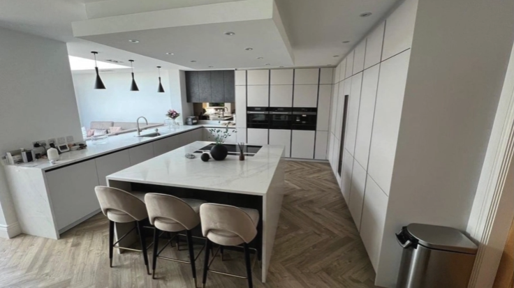
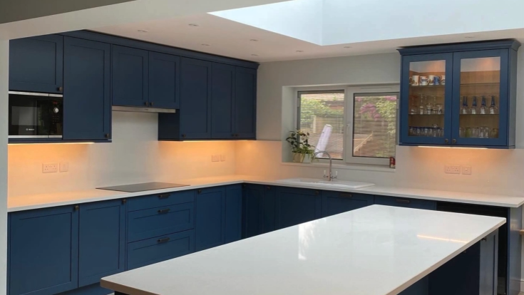
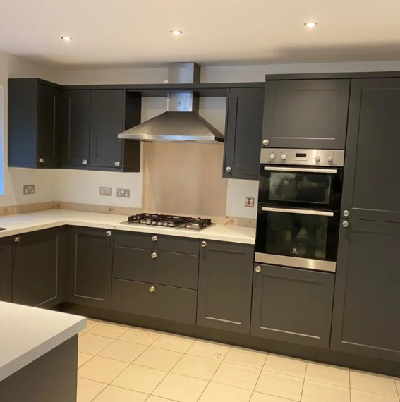
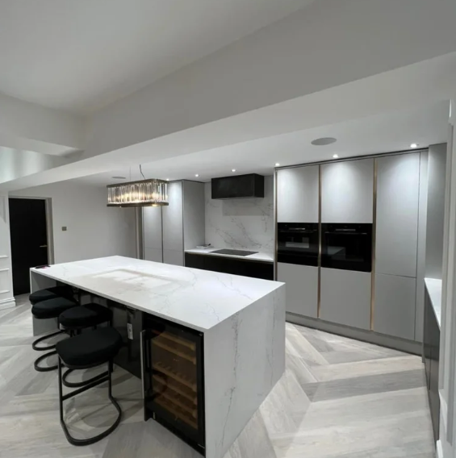
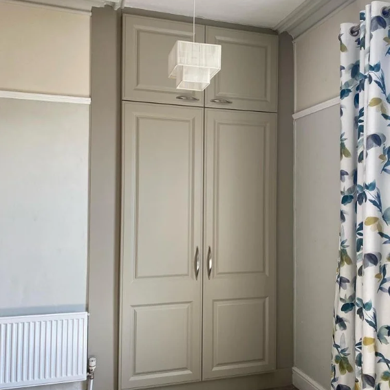
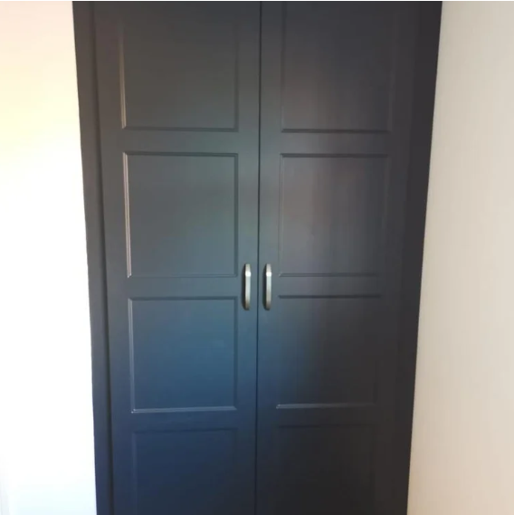
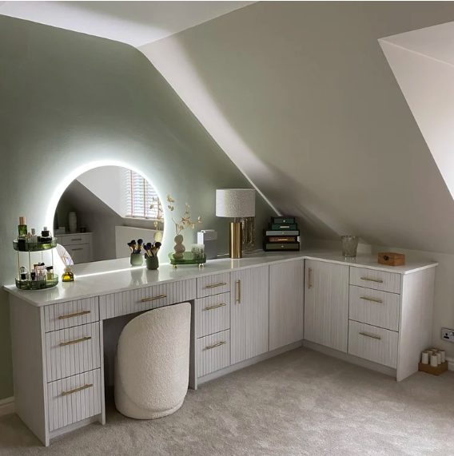
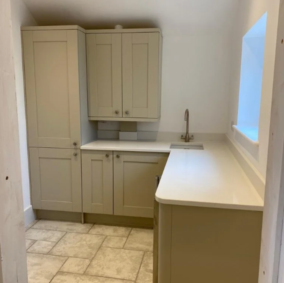
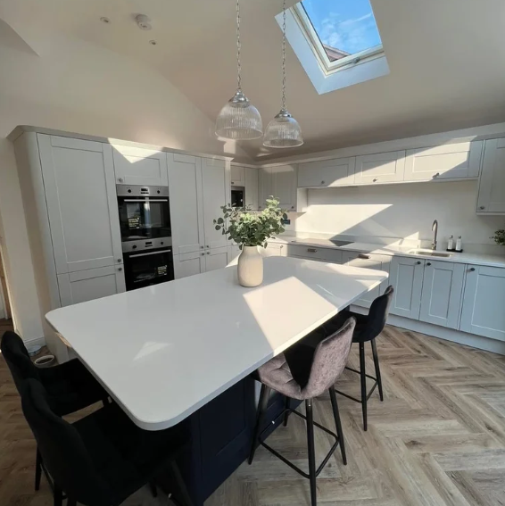

Josh & Lee were fantastic! They did an incredible job of our kitchen, were friendly, fun and happy to show me what they were doing as I'm nosey. Highly recommend!!!Will & Shelby — Tilston, Malpas
Cheshire-Based · North West Coverage
Bespoke Kitchen & Wardrobe Fitters, Based in Cheshire.
Josh and Lee are the bespoke kitchen and wardrobe fitters who will beat big company quotes, while still delivering outstanding craftsmanship on every project.
Free, no-obligation quotes across the North West


About JL Kitchens & Bedrooms
Kitchen fitters Cheshire homeowners actually recommend
Run directly by Josh and Lee, JL Kitchens & Bedrooms is the bespoke kitchen fitter near me that homeowners across the North West turn to when they want big-company quality without the big-company price.
01
What we offer
We supply and fit the full range of kitchens, and design and install bespoke fitted wardrobes and furniture in any colour or style. We can even bring your current kitchen up to date with made-to-measure doors and panels — a cost-effective alternative to a full custom fitted kitchen in Cheshire. Every project is tailor-made around our customer's vision and our professional advice.
02
Where we cover
As kitchen fitters based in Cheshire, we cover every region across the North West. That includes kitchen fitters serving Staffordshire, Shropshire and Greater Manchester, plus fitted wardrobes across North Wales.
- Cheshire (home base)
- Staffordshire
- Shropshire
- Greater Manchester
- North Wales
03
Why us
We promise to go beyond your expectations by supplying and fitting to a higher standard than people have come to expect from big-name companies — without the huge costs those chains carry. Request a kitchen renovation quote in Cheshire today and see the difference of dealing directly with the two fitters doing the work.
Recent installations
A small selection of our kitchen & wardrobe fits
From charcoal and white shaker kitchens to fitted wardrobes and dressing rooms, every project in our gallery was installed personally by Josh and Lee.

Charcoal shaker kitchen with integrated appliances
White handleless kitchen with marble island
Fitted wardrobe with taupe shaker doors
Fitted wardrobe with charcoal panelled doors
Fitted dressing table with illuminated mirror
Fitted utility room cabinetry
Client reviews
What our clients have to say
Real feedback from homeowners across Cheshire and the North West.
Excellent work, very professional and lovely tradesmen to have in the house, kept us well informed as to what to expect, any issues and finished the work ahead of schedule. We were so impressed after our own attempts at joinery that we've just had them back for some fitted wardrobes!Nicola Williams — Weston, Crewe
Josh & Lee did an amazing job on our kitchen. First class fitting, super quick install and tidy. Our kitchen was beyond our expectations and we couldn't be happier. Can't recommend them enough!!Steve Scott — Cheadle
Get in touch
Get your free quote
Fill out the form and Josh or Lee will be in touch directly to talk through your vision — no call centres, no hard sell.
